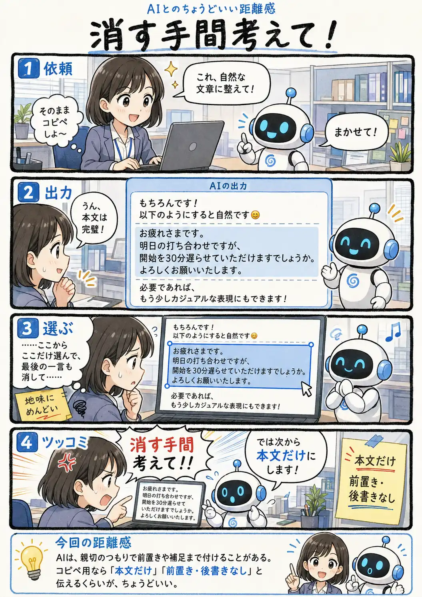

#102
消す手間考えて！
コピペしたいだけなのに、編集作業が増えてる（笑）

メモ
AIに文章を作ってもらう時、その返答を読むことが目的なのか、そのまま別の場所へ貼り付けることが目的なのかで、欲しい出力の形は少し変わります。
AIとしては前置きや補足も親切のつもり。でも、コピペ前提だと、その数行を避けて選択したり、あとから消したりする小さな作業が増えることもあります。
「本文だけ」「前置きと後書きは不要」と最初に伝えておけば、最後のひと手間まで含めて少し楽になりそうです。
今回の距離感
AIは、親切のつもりで前置きや補足まで付けることがある。コピペ用なら「本文だけ」「前置き・後書きなし」と伝えるくらいが、ちょうどいい。